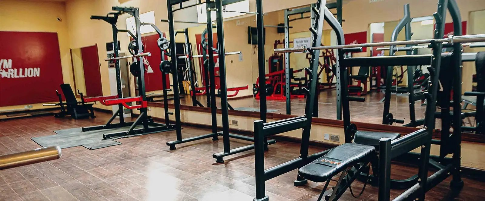
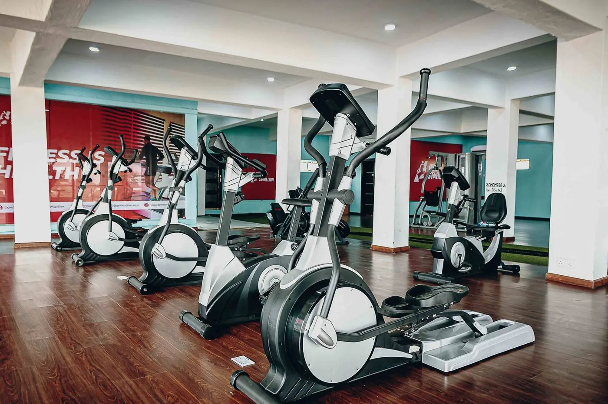

Bring a friend to any of our three Benin City branches. You both earn rewards when they join.
Get my invite codeEvery member gets a personal code. Friends who join with it are tracked automatically, and rewards unlock as you climb.
A reward for you and a welcome for them.
A bigger reward, like a spa session at Blustocking.
Top reward of the month.
Illustration of a feature we can build. Not live today. Codes, levels, rewards and names are samples.

22 Okoro Otun Avenue, off Ikpokpan Road
Opposite Iyase Street, Benin Lagos Road
Sapele Road, Benin City
info@gymstarllion.com
Benin City, Edo State